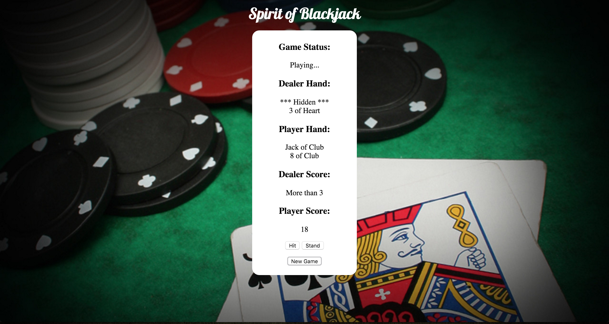
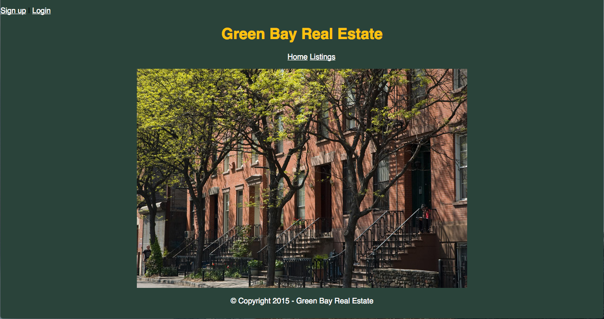
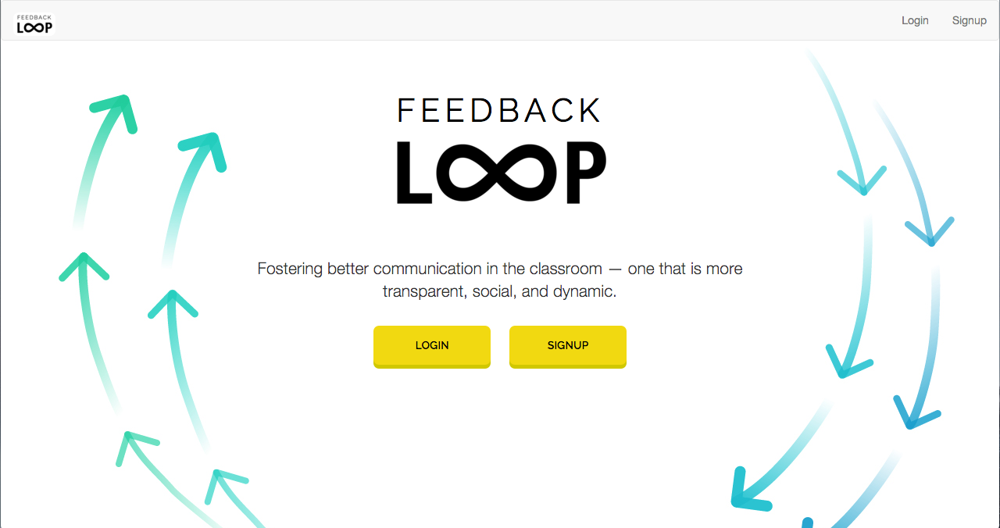
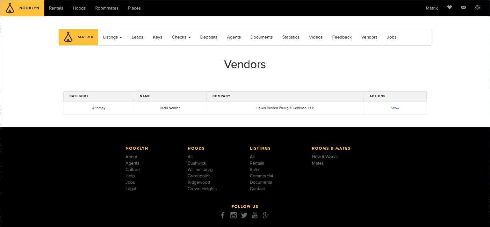
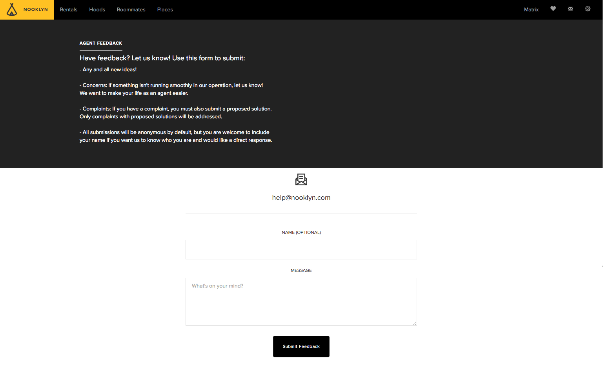

Below are a few of the projects I have either built fully, contributed to, or built major features for! Enjoy.
This is a single player Blackjack game developed using JavaScript, jQuery, HTML, CSS, and PureCSS.
This is a full stack web app developed using Ruby on Rails, PostgreSQL, HTML, CSS, and Pure CSS.
This is a full stack web app developed using JavaScript, jQuery, Node.js, Express.js, Mongo, Mongoose, AJAX, Moment.js, Emoji-Picker.js, Bootstrap, and the Yelp API.
This is a full stack feature for the Nooklyn.com website. It allows agents to view a list of preferred vendors. This feature was created using Ruby, Rails, HTML, CSS, and PostgreSQL
This is a full stack feature for the Nooklyn.com website. It allows agents to submit feedback to management. This feature was created using Ruby, Rails, HTML, CSS, and PostgreSQL